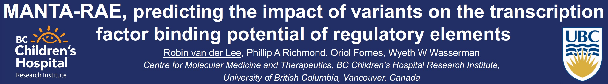

Weixuan Fu 0000-0002-6434-5468 · weixuanfu · weixuanfu Department of Biostatistics, Epidemiology and Informatics, Institute for Biomedical Informatics, University of Pennsylvania
Casey Greene 0000-0001-8713-9213 · cgreene · greenescientist Department of Systems Pharmacology & Translational Therapeutics, University of Pennsylvania; Childhood Cancer Data Lab, Alex’s Lemonade Stand Foundation
Daniel Himmelstein 0000-0002-3012-7446 · dhimmel · dhimmel Department of Systems Pharmacology & Translational Therapeutics, University of Pennsylvania
Qiwen Hu · huqiwen0313 · qiwen_hu Department of Systems Pharmacology & Translational Therapeutics, University of Pennsylvania
Jason Miller 0000-0002-1835-3512 · git-jemiller · JEMgenes Department of Genetics, Institute for Biomedical Informatics, and Perelman School of Medicine, University of Pennsylvania
Robin van der Lee 0000-0001-7391-9438 · robinvanderlee · robinvdlee The University of British Columbia, Vancouver, Canada; BC Children’s Hospital Research Institute; Centre for Molecular Medicine and Therapeutics
Manubot is an open source tool for writing manuscripts on GitHub in markdown format. Manubot applies the git-based software workflow to scholarly writing, enabling enhanced transparency, collaboration, automation, and reproducibility.
This manuscript is the result of a special working group at the 2019 Pacific Symposium on Biocomputing that will introduce attendees to collaborative writing with Manubot. Each conference attendee is invited to write a small blurb on themselves and their research, by submitting a pull request to the manuscript repository at https://github.com/dhimmel/psb-manuscript.
The working group also covers how to write your next manuscript using Manubot and what features of Manubot can help biomedical researchers document and publish their computational research. For example, Manubot enables citation by persistent identifier to automate bibliographic metadata retrieval and formatting as well as allowing templating so results can be directly inserted from the analyses that produced them.
Methods
In this section, PSB 2019 attendees are asked to contribute a bit about themselves and their research. As part of the special working group, we thought this would be a helpful activity to introduce biocomputational scientists to writing with Manubot. For inspiration, here are some prompts:
Introduce yourself briefly.
What do you research? Include any relevant links to your lab or personal website.
What is your favorite study from your career or what study was your biggest discovery?
What was your first scholarly publication?
Add a code snippet or mathematical equation.
Add a figure with a caption. This could be a picture of you in Hawaii or a figure from your previous work if the license is permissive enough to allow reuse.
Self-citations are explicitly encouraged, since one goal of this activity is to introduce attendees to the concept of citation by persistent identifier. By having attendees cite their existing works, we hope to show researchers how references can be created from just persistent identifiers, and how this can assist with collaborative and transparent authoring.
The markdown manuscript source has a section for each PSB 2019 attendee, generated from the online attendee list. Names are ordered alphabetically by last name. If you’d like to contribute, but are not already in the list, please insert your section at the appropriate alphabetical location.
For questions on how to use Manubot, see the usage documentation. More information on the tool and its inception is available in the project manuscript [1].
Attendees
J. Brian Byrd
I’m a physician-scientist at the University of Michigan. My laboratory focuses on identifying novel biomarkers for a clinically important subtype of high blood pressure, called primary aldosteronism. Our principal interest is in detecting the transcriptional activity of the mineralocorticoid receptor [2].
My main interest of research is developing automated machine learning tools for the analysis of large scale biomedical/sequencing data. Besides that, I am working on optimizing analysis pipeline of predicting neoantigen specifically presented in tumor cells using DNA and RNA sequencing data, for designing personalized neoantigen vaccines in cancer immunotherapies.
Casey Greene
I run an integrative genomics research lab at the University of of Pennsylvania, and I direct the Childhood Cancer Data Lab for Alex’s Lemonade Stand Foundation. The lab at Penn develops methods to integrate large-scale public datasets, primarily from transcriptomic assays, and applies these methods to a broad set of biological questions. We’ve studied numerous systems, and we currently have active research projects in the application areas of microbial systems [4,5], cancers [6,7,8,9], and rare diseases [10]. At this PSB, a postdoc from the group will present a paper describing Continental Breakfast Included (CBI) effect in the final talk of the final session of this year’s meeting [11].
I’m also interested in technologies that enhance the future of scientific communication. Our lab has studied Sci-Hub [12]. We’ve led a large collaborative review of deep learning in biology and medicine [13]. Members of the lab have developed tools like manubot [1], which you are using now. More publications are available on our lab website.
Daniel Himmelstein
Greetings, I’m in the Greene Lab at the University of Pennsylvania and am the lead developer of the Manubot project. 2019 is my first PSB and I’m exciting to backpack around the Big Island following the conference.
My main area of research is integrating biomedical knowledge using hetnets [14,15]. However, I’ve also studied Sci-Hub, finding that it provides access to nearly all paywalled scholarly literature [16]. Perhaps my biggest discovery was observing an epidemiological association that higher elevation counties have lower rates of lung cancer, suggesting that oxygen is an inhaled carcinogen (Figure 1) [17,18].
Figure 1: The association between elevation and lung cancer across Western U.S. counties. This figure is reused from here under its CC BY 4.0 License.
I haven’t done much text mining, but I did enjoy extracting attendee names for PSB from the online PDF. Converting the PDF to text in Python was as easy as:
I’m a postdoc from Greene Lab at the University of Pennsylvania. My research focus on integrating different types of high-throughput sequencing data to find meaningful biological signals behind it. I developed machine learning and statistical approaches to identify regulatory elements that affect transcription and translation. I also developed machine learning-based methods to extract regulatory signals from addicted brain [19], developmental tissues [20] and cell-type signals from single-cell datasets.
This year at PSB, I will present our findings for analyzing single-cell data based on deep variation auto-encoders [11].
Lawrence Hunter
I’m a cofounder of the PSB conference, and a professor at the University of Colorado School of Medicine. You can find information about my lab at http://compbio.ucdenver.edu/Hunter. One of my early papers is 21.
Shantanu Jain
Hi all, I am very excited to be here attending PSB. I am a research scientist at Northeastern University. I am broadly interested in Machine learning methods. During my Ph.D., I worked on positive unlabeled learning. I am most proud about my research on non parametric estimation of class priors from positive and unlabeled data [22]. I have started learning about Causal Inference lately and I am interested in applying it to Biological datasets.
Adam Kurkiewicz
I’m interested in building a tool to do SNP calling from single cell RNASeq data. This has been tried before by various groups, e.g. check out the honeyBADGER paper [23], but ultimately none of the approaches were successful. I have a few ideas on how to make progress — give me a shout if you’d like to discuss!
Trang Le
Hello from the Moore lab at the University of Pennsylvania! I’m a mathematician who’s currently excited about automated machine learning.
Here goes the self-citations:
My own favorite study: Generalization of the Fermi Pseudopotential [24] - a piece of mathematical physics work I got to do when procrastinating writing my dissertation.
My first (first-author) scholarly publication: Differential privacy-based evaporative cooling feature selection and classification with relief-F and random forests [25]. Check out the Github repo for this study here.
Code snippet I’m most proud of:
M = dec2bin(0:2^(n*n)-1,n*n)
I will be impressed if you could tell what the language is. This is my answer to a question on Math StackExchange.
I have too many favorite mathematical equations, but here’s one: \[a^p \equiv a \mod p\] Anyone recognize this theorem?
And a figure with a caption:
Figure 2: Participants tended to have older brain-predicted age when given placebo.
This is an improved version of my main figure in this interesting study [26].
Binglan Li
Greeting from the Ritchie Lab at the University of Pennsylvania. I am a third year graduate student in the Genomics and Computational Biology programe and interested in prioritization of drug response-related gene via data integration approaches.
I am still on the early part of research journey. But I would love to share my latest work published in the PSB 2019 proceedings 2019.
Influence of tissue context on gene prioritization for predicted transcriptome-wide association studies [27].
Code snippet I’m most proud of:
############################################
## Menu
## 1. Food Preparation
## 1.1. Load Necessary Libraries and Scripts
## 1.2. Define Parameters
## 2. Appetizers
## 2.1. Data Simulation
## 2.2. eQTL Detection
## 3. Entree/Main Course
## 3.1. Run single-tissue TWAS
## 3.2. Run integrative TWAS
## 3.3. Evaluate Power and Type I Error Rate of TWAS Results
## 4. Dessert
## 4.1. None. Sorry this is a healthy (aka anti-sweet) restaurant.
############################################
## actual code
set.seed(random_seed, kind = "L'Ecuyer-CMRG")
Here is a plot about minor allele frequency of the eQTLs in the GTEx v7 whole blood tissue. Please pretend that you do see a title in the figure.
Figure 3: Minor allele frequency of eQTLs in the GTEx v7 whole blood tissue.
Jason E. Miller
Hi, I’m a postdoctoral fellow from the Ritchie lab at the University of Pennsylvania.
I’m currently focussed on identifying how genetic variation leads to Alzheimer’s disease through perturbation of gene regulatory mechanisms.
My favorite study from my career identified specific types of codon bias among synonymous variants, such as those related to codon optimality and frequency, that are associated with an Alzheimer’s disease imaging endophenotype [28].
If you are interested, you can check out my github page here.
I am a computational biologist studying the role of chromatin structure/dynamics and non-coding regions including enhancers, promoters, insulators and their role in gene regulation. The mission of my lab is the integration of omics data to explore and better understand the functional mechanisms of the non-coding genome and to provide accessible tools for the community to accelerate discovery in this field. The long-term goal of my research is to develop innovative computational approaches and to use cutting-edge experimental assays, such as single cell and genome editing, to systematically analyze sources of genetic and epigenetic variation that affect gene regulation in different human traits and diseases. I believe this will further our understanding of disease etiology involving these poorly characterized regions and will provide a foundation for the development of new drugs and more targeted treatments.
I am excited to share during the workshop Reading between the genes: Interpreting noncoding DNA in high throughput a new computational methods we have recently developed to analyze CRISPR tiling screen called CRISPR-SURF. You can read more on the manuscript that was recently published in Nature Methods [29].
Rashika Ramola
Hi I am Rashika Ramola. I am a PhD student at Northeastern University. This is my first PSB. I like computational biology, and I am excited to be here.
My first paper studies some performance measures (accuracy, balanced accuracy, f-measure and Matthews Correlation Coefficient) in positive-unlabeled learning [30]. In this work, we demonstrate how performance measure can be inaccurate in positive unlabeled setting, and then we introduce correction measures.
I am including an important formula from the abovementioned mauscript:
It shows that Matthews correlation coefficient (MCC) is directly proportional to its equivalent in positive unlabeled setting. Thus, MCC is a well behaved performance measure.
This is Shannon from UNC at Chapel Hill. I’m a bioinformatics scientis at UNC lineberger cancer center. My recent research project could be found at PSB poster section #69. It’s about using methylation data to predict tumor infiltrating lymphocytes, which is highly correlated with patient survival in Melanoma.
Here are some of my publications:
Meta-analysis of airway epithelium gene expression in asthma [32].
Identification of a robust methylation classifier for cutaneous melanoma diagnosis [33].
Transcriptome-wide identification and study of cancer-specific splicing events across multiple tumors [34].
Prevalent RNA recognition motif duplication in the human genome [35].
My PhD work was on integrative omics to discover genes involved in immunity [36]. I also did some work on comparative genomics of primate genomes, finding that rapidly evolving genes are predictive of virus-human interactions [37].
In my post-doc work, I am developing methods for interpreting regulatory genomic variants based on alterations to transcription factor binding motifs. Some of that work is on poster 71, which I will present on Saturday 5 January 2018 at the PSB meeting.
Figure 4: This is the header of the poster I’ll present here under its CC BY 4.0 License.
Ryan Whaley
Hi, I’m Ryan and I’m one of the technical leads for PharmGKB. I’m also helping to run the A/V desk during this presentation.
I’m trained in software development and started by career as a DBA. Over the past decade I’ve switched to Java and then web application development. I’ve contributed to PharmGKB [38], CPIC [39], and other PGx consortia.
References
1. Open collaborative writing with Manubot
Daniel S. Himmelstein, David R. Slochower, Venkat S. Malladi, Casey S. Greene, Anthony Gitter Manubot Preprint (2018-12-31) https://greenelab.github.io/meta-review/
2. Human Urinary mRNA as a Biomarker of Cardiovascular Disease.
Brian G Bazzell, William E Rainey, Richard J Auchus, Davide Zocco, Marco Bruttini, Scott L Hummel, James Brian Byrd Circulation. Genomic and precision medicine (2018-09) https://www.ncbi.nlm.nih.gov/pubmed/30354328
DOI: 10.1161/circgen.118.002213 · PMID: 30354328
3. A System for Accessible Artificial Intelligence
Randal S. Olson, Moshe Sipper, William La Cava, Sharon Tartarone, Steven Vitale, Weixuan Fu, Patryk Orzechowski, Ryan J. Urbanowicz, John H. Holmes, Jason H. Moore Genetic Programming Theory and Practice XV (2018) https://doi.org/gfsptm
DOI: 10.1007/978-3-319-90512-9_8
4. ADAGE-Based Integration of Publicly Available Pseudomonas aeruginosa Gene Expression Data with Denoising Autoencoders Illuminates Microbe-Host Interactions
Jie Tan, John H. Hammond, Deborah A. Hogan, Casey S. Greene mSystems (2016-01-19) https://doi.org/gcgmbq
DOI: 10.1128/msystems.00025-15 · PMID: 27822512 · PMCID: PMC5069748
5. Unsupervised Extraction of Stable Expression Signatures from Public Compendia with an Ensemble of Neural Networks
Jie Tan, Georgia Doing, Kimberley A. Lewis, Courtney E. Price, Kathleen M. Chen, Kyle C. Cady, Barret Perchuk, Michael T. Laub, Deborah A. Hogan, Casey S. Greene Cell Systems (2017-07) https://doi.org/gcw9f4
DOI: 10.1016/j.cels.2017.06.003 · PMID: 28711280 · PMCID: PMC5532071
6. Extracting a biologically relevant latent space from cancer transcriptomes with variational autoencoders
Gregory P. Way, Casey S. Greene Biocomputing 2018 (2017-11-17) https://doi.org/gfspsd
DOI: 10.1142/9789813235533_0008
7. Machine Learning Detects Pan-cancer Ras Pathway Activation in The Cancer Genome Atlas
Gregory P. Way, Francisco Sanchez-Vega, Konnor La, Joshua Armenia, Walid K. Chatila, Augustin Luna, Chris Sander, Andrew D. Cherniack, Marco Mina, Giovanni Ciriello, … Armaz Mariamidze Cell Reports (2018-04) https://doi.org/gfspsb
DOI: 10.1016/j.celrep.2018.03.046 · PMID: 29617658 · PMCID: PMC5918694
8. Genomic and Molecular Landscape of DNA Damage Repair Deficiency across The Cancer Genome Atlas
Theo A. Knijnenburg, Linghua Wang, Michael T. Zimmermann, Nyasha Chambwe, Galen F. Gao, Andrew D. Cherniack, Huihui Fan, Hui Shen, Gregory P. Way, Casey S. Greene, … Armaz Mariamidze Cell Reports (2018-04) https://doi.org/gfspsc
DOI: 10.1016/j.celrep.2018.03.076 · PMID: 29617664 · PMCID: PMC5961503
9. Oncogenic Signaling Pathways in The Cancer Genome Atlas
Francisco Sanchez-Vega, Marco Mina, Joshua Armenia, Walid K. Chatila, Augustin Luna, Konnor C. La, Sofia Dimitriadoy, David L. Liu, Havish S. Kantheti, Sadegh Saghafinia, … Armaz Mariamidze Cell (2018-04) https://doi.org/gc7r9b
DOI: 10.1016/j.cell.2018.03.035 · PMID: 29625050 · PMCID: PMC6070353
10. MultiPLIER: a transfer learning framework reveals systemic features of rare autoimmune disease
Jaclyn N Taroni, Peter C Grayson, Qiwen Hu, Sean Eddy, Matthias Kretzler, Peter A Merkel, Casey S Greene Cold Spring Harbor Laboratory (2018-08-20) https://doi.org/gfc9bb
DOI: 10.1101/395947
11. Parameter tuning is a key part of dimensionality reduction via deep variational autoencoders for single cell RNA transcriptomics
Qiwen Hu, Casey S Greene Cold Spring Harbor Laboratory (2018-08-05) https://doi.org/gdxxjf
DOI: 10.1101/385534
12. Sci-Hub provides access to nearly all scholarly literature
Daniel S Himmelstein, Ariel Rodriguez Romero, Jacob G Levernier, Thomas Anthony Munro, Stephen Reid McLaughlin, Bastian Greshake Tzovaras, Casey S Greene eLife (2018-03-01) https://doi.org/ckcj
DOI: 10.7554/elife.32822 · PMID: 29424689 · PMCID: PMC5832410
13. Opportunities and obstacles for deep learning in biology and medicine
Travers Ching, Daniel S. Himmelstein, Brett K. Beaulieu-Jones, Alexandr A. Kalinin, Brian T. Do, Gregory P. Way, Enrico Ferrero, Paul-Michael Agapow, Michael Zietz, Michael M. Hoffman, … Casey S. Greene Journal of The Royal Society Interface (2018-04) https://doi.org/gddkhn
DOI: 10.1098/rsif.2017.0387 · PMID: 29618526 · PMCID: PMC5938574
15. Systematic integration of biomedical knowledge prioritizes drugs for repurposing
Daniel Scott Himmelstein, Antoine Lizee, Christine Hessler, Leo Brueggeman, Sabrina L Chen, Dexter Hadley, Ari Green, Pouya Khankhanian, Sergio E Baranzini eLife (2017-09-22) https://doi.org/cdfk
DOI: 10.7554/elife.26726 · PMID: 28936969 · PMCID: PMC5640425
17. Lung cancer incidence decreases with elevation: evidence for oxygen as an inhaled carcinogen
Kamen P. Simeonov, Daniel S. Himmelstein PeerJ (2015-01-13) https://doi.org/98p
DOI: 10.7717/peerj.705 · PMID: 25648772 · PMCID: PMC4304851
19. Histone posttranslational modifications predict specific alternative exon subtypes in mammalian brain
Qiwen Hu, Eun Ji Kim, Jian Feng, Gregory R. Grant, Elizabeth A. Heller PLOS Computational Biology (2017-06-13) https://doi.org/gbhkps
DOI: 10.1371/journal.pcbi.1005602 · PMID: 28609483 · PMCID: PMC5487056
20. Specific histone modifications associate with alternative exon selection during mammalian development
Qiwen Hu, Casey Greene, Elizabeth Heller Cold Spring Harbor Laboratory (2018-07-04) https://doi.org/gfsptv
DOI: 10.1101/361816
21. EDGAR: Extraction of Drugs, Genes And Relations from the Biomedical Literature
Thomas C. Rindflesch, Lorraine Tanabe, John N. Weinstein, Lawrence Hunter Biocomputing 2000 (1999-12) https://doi.org/gfsptq
DOI: 10.1142/9789814447331_0049
22. Nonparametric semi-supervised learning of class proportions
Shantanu Jain, Martha White, Michael W. Trosset, Predrag Radivojac arXiv (2016-01-08) https://arxiv.org/abs/1601.01944v1
23. Linking transcriptional and genetic tumor heterogeneity through allele analysis of single-cell RNA-seq data
Jean Fan, Hae-Ock Lee, Soohyun Lee, Da-eun Ryu, Semin Lee, Catherine Xue, Seok Jin Kim, Kihyun Kim, Nikolaos Barkas, Peter J. Park, … Peter V. Kharchenko Genome Research (2018-06-13) https://doi.org/gdrgwz
DOI: 10.1101/gr.228080.117 · PMID: 29898899 · PMCID: PMC6071640
24. Generalization of the Fermi Pseudopotential
Trang T. Le, Zach Osman, D. K. Watson, Martin Dunn, B. A. McKinney arXiv (2018-06-14) https://arxiv.org/abs/1806.05726v1
25. Differential privacy-based evaporative cooling feature selection and classification with relief-F and random forests
Trang T Le, W Kyle Simmons, Masaya Misaki, Jerzy Bodurka, Bill C White, Jonathan Savitz, Brett A McKinney Bioinformatics (2017-05-04) https://doi.org/f96b8d
DOI: 10.1093/bioinformatics/btx298 · PMID: 28472232 · PMCID: PMC5870708
26. Effect of Ibuprofen on BrainAGE: A Randomized, Placebo-Controlled, Dose-Response Exploratory Study
Trang T. Le, Rayus Kuplicki, Hung-Wen Yeh, Robin L. Aupperle, Sahib S. Khalsa, W. Kyle Simmons, Martin P. Paulus Biological Psychiatry: Cognitive Neuroscience and Neuroimaging (2018-10) https://doi.org/gfsprv
DOI: 10.1016/j.bpsc.2018.05.002 · PMID: 29941380
27. Influence of tissue context on gene prioritization for predicted transcriptome-wide association studies
Binglan Li, Yogasudha Veturi, Yuki Bradford, Shefali S. Verma, Anurag Verma, Anastasia M. Lucas, David W. Haas, Marylyn D. Ritchie Biocomputing 2019 (2018-11) https://doi.org/gfsqxj
DOI: 10.1142/9789813279827_0027
28. Codon bias among synonymous rare variants is associated with Alzheimer’s disease imaging biomarker
Jason E Miller, Manu K Shivakumar, Shannon L Risacher, Andrew J Saykin, Seunggeun Lee, Kwangsik Nho, Dokyoon Kim Pacific Symposium on Biocomputing. Pacific Symposium on Biocomputing (2018) https://www.ncbi.nlm.nih.gov/pmc/articles/PMC5756629/
PMID: 29218897 · PMCID: PMC5756629
29. CRISPR-SURF: discovering regulatory elements by deconvolution of CRISPR tiling screen data.
Jonathan Y Hsu, Charles P Fulco, Mitchel A Cole, Matthew C Canver, Danilo Pellin, Falak Sher, Rick Farouni, Kendell Clement, Jimmy A Guo, Luca Biasco, … Luca Pinello Nature methods (2018-12) https://www.ncbi.nlm.nih.gov/pubmed/30504875
DOI: 10.1038/s41592-018-0225-6 · PMID: 30504875
31. A novel multi-network approach reveals tissue-specific cellular modulators of fibrosis in systemic sclerosis
Jaclyn N. Taroni, Casey S. Greene, Viktor Martyanov, Tammara A. Wood, Romy B. Christmann, Harrison W. Farber, Robert A. Lafyatis, Christopher P. Denton, Monique E. Hinchcliff, Patricia A. Pioli, … Michael L. Whitfield Genome Medicine (2017-03-23) https://doi.org/gfsptx
DOI: 10.1186/s13073-017-0417-1 · PMID: 28330499 · PMCID: PMC5363043
33. Identification of a robust methylation classifier for cutaneous melanoma diagnosis
Kathleen Conway, Sharon N. Edmiston, Joel S. Parker, Pei Fen Kuan, Yi-Hsuan Tsai, Pamela A. Groben, Daniel C. Zedek, Glynis A. Scott, Eloise A. Parrish, Honglin Hao, … Nancy E. Thomas Journal of Investigative Dermatology (2018-12) https://doi.org/gfsvbj
DOI: 10.1016/j.jid.2018.11.024 · PMID: 30529013
36. Integrative Genomics-Based Discovery of Novel Regulators of the Innate Antiviral Response.
Robin van der Lee, Qian Feng, Martijn A Langereis, Rob Ter Horst, Radek Szklarczyk, Mihai G Netea, Arno C Andeweg, Frank JM van Kuppeveld, Martijn A Huynen PLoS computational biology (2015-10-20) https://www.ncbi.nlm.nih.gov/pubmed/26485378
DOI: 10.1371/journal.pcbi.1004553 · PMID: 26485378 · PMCID: PMC4618338
37. Genome-scale detection of positive selection in nine primates predicts human-virus evolutionary conflicts.
Robin van der Lee, Laurens Wiel, Teunis JP van Dam, Martijn A Huynen Nucleic acids research (2017-10-13) https://www.ncbi.nlm.nih.gov/pubmed/28977405
DOI: 10.1093/nar/gkx704 · PMID: 28977405 · PMCID: PMC5737536


{kind=link}